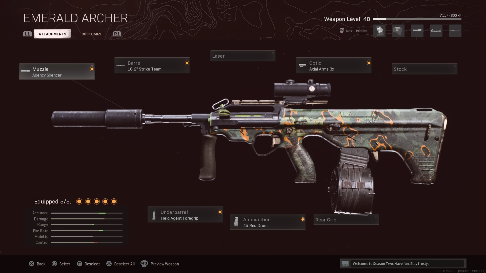

AUG adalah senjata Pilihan utama para pemain warzone dalam season 2. Senjata ini merupakan senjata burst yang dibawa dari cold war ke warzone
DPS value dan TTK (time to kill) yang cepat pada jarak medium dan long range dapat merobek armor dalam 2 burst membuat AUG menjadi salah satu META weapon di warzone.
Berikut adalah kombinasi
attachments untuk membuat META AUG di WARZONE
muzzle : Agency silencer
barrel : 18'2 strike team barrel
grip : field agent foregrip
ammunition : 45 round drum
optic : axial arms 3x/visiontech 2x

CR-56 AMAX merupakan senjata yang datang bersama fennec dalam season 4 modern warfare/warzone.
membawa tipe amunisi yang sama dengan AK 47 namun lebih mudah dikontrol, AMAX sekarang memiliki posisi sebagai AR (assault rifles) favorit dikarenakan TTK yang cepat.
Tapi, senjata ini memiliki batasan yaitu julah amunisi yang bisa dibawa yaitu 45,
Berikut adalah kombinasi attachments untuk membuat META AMAX di WARZONE
muzzle : Monolithic Suppressor
barrel : XRK Zodiak s440 Barrel
grip : commando foregrip
ammunition : 45 round mag
optic : VLK 3x optic(mid to long)/G.I mini reflex(mid to close range)

FFAR FFAR merupakan Senjata Dari integrasi COLD WAR yang secara cepat menjadi populer.
Fire rate yang cepat ditambah damage yang kuat membuat FFAR menjadi Dominan dalam close to mid range
dan mengalahkan setiap SMG di dalam Game. tidak heran banyak player menjadi senjata ini sebagai cadangan pada setiap loadout.
Berikut adalah kombinasi attachments untuk membuat META FFAR di WARZONE
muzzle : Agency Suppressor
barrel : 19'5 reinforced heavy barrel
grip : Field agent foregrip
ammunition : STANAG 50 round Mag
stock : Raider stock